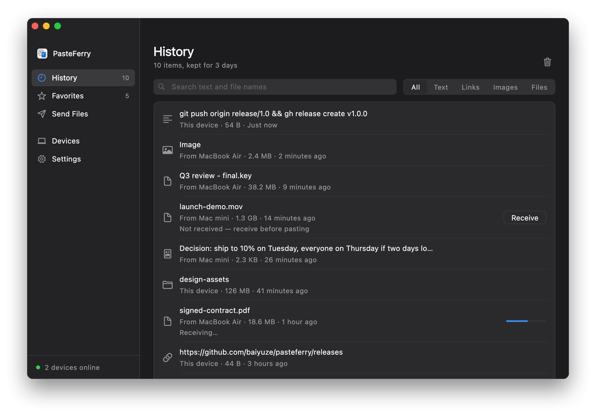
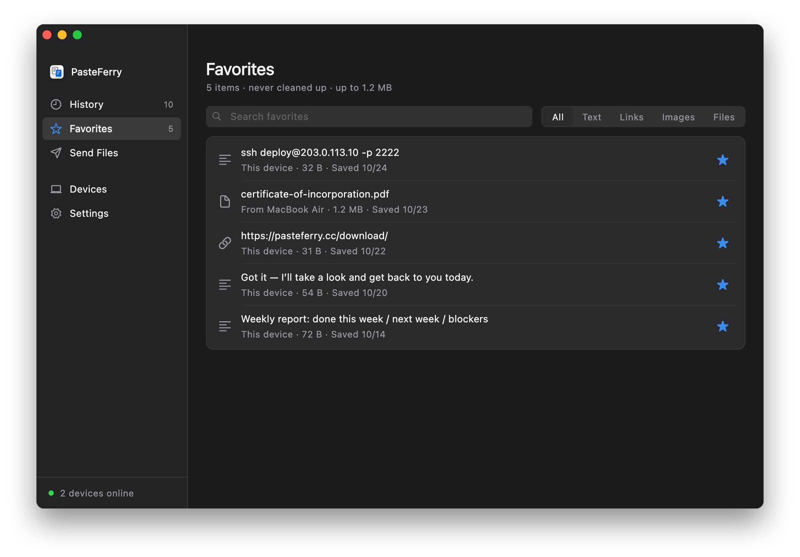
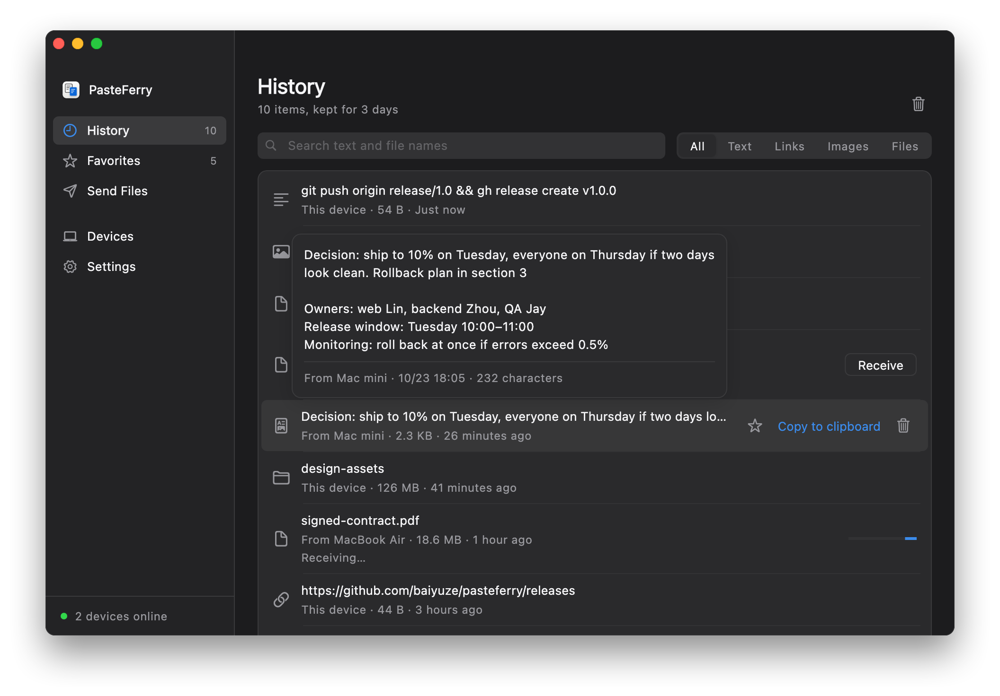

Links get their own tab New
Filter your history by type — text, links, images, files or favorites — in one click.
PasteFerry features
A clipboard shared by your Mac, Windows and Linux computers, with everything you copied a keystroke away.

Press ⌘CCtrl+C and it’s on your other computers. Press ⌘VCtrl+V there. No shared account needed — mix Mac, Windows and Linux however you like.
Formatted text pastes cleanly into plain-text fields, too.
Larger items sync as a record first; fetch them when you need them. The limit is adjustable.
What you copy meanwhile lands in the other computer’s history once it’s back.
New in 2.4
No switching apps, no digging through chats. Press the shortcut in any app, pick an item, and it’s pasted right where your cursor was.
Hi Sarah,
Here are our billing details:
Billing: Ferry Labs Ltd · VAT GB 123 4567 89
In any app. The window opens in the middle of the screen and hands focus back when you’re done.
Search text and file names. Without a search, press 1–9 to pick one of the first nine.
It’s pasted where your cursor was. ⇧↩Shift+Enter pastes plain text; ⌘↩Ctrl+Enter copies without pasting.
You can change or turn off the shortcut in Settings. On a Mac, pasting for you needs the Accessibility permission; without it the item is copied and you press ⌘V. On Linux with Wayland, picked items are copied and you press Ctrl+V.
New in 2.4
Billing details, addresses, stock replies: star an item to keep a copy. Favorites never expire and survive clearing your history.

History expires on schedule; favorites stay.
Changing or deleting the original file doesn’t touch the favorite.
Switch to the Favorites tab, or press ⌘DCtrl+D to favorite the selected item.
Filter your history by type — text, links, images, files or favorites — in one click.
Rest the pointer on an item for half a second to see the full text, a larger image or every file name.

Search by text or file name and put it back on the clipboard in one click. History is kept for 3 days by default, up to 30.
Anything over 50 MB syncs as a record first and only transfers when you click Receive.
Copy a folder and paste the same folder, structure intact, on the other computer.
Characters that are fine on a Mac but not allowed on Windows become full-width look-alikes, so names stay readable.
On the same network, install and pair. Across networks, turn on the official service — no server of your own. Computers connect directly whenever possible and fall back to an encrypted relay.
No server. Enter a pairing code and you’re done.
The official service, your own server, or Tailscale.
Verify fingerprints when pairing; the server never sees your content.
Version 2.4.0, free and open source. macOS 13 or later; Windows 10 and 11; Linux (x64 and ARM64).
New here? Set it up in three steps →